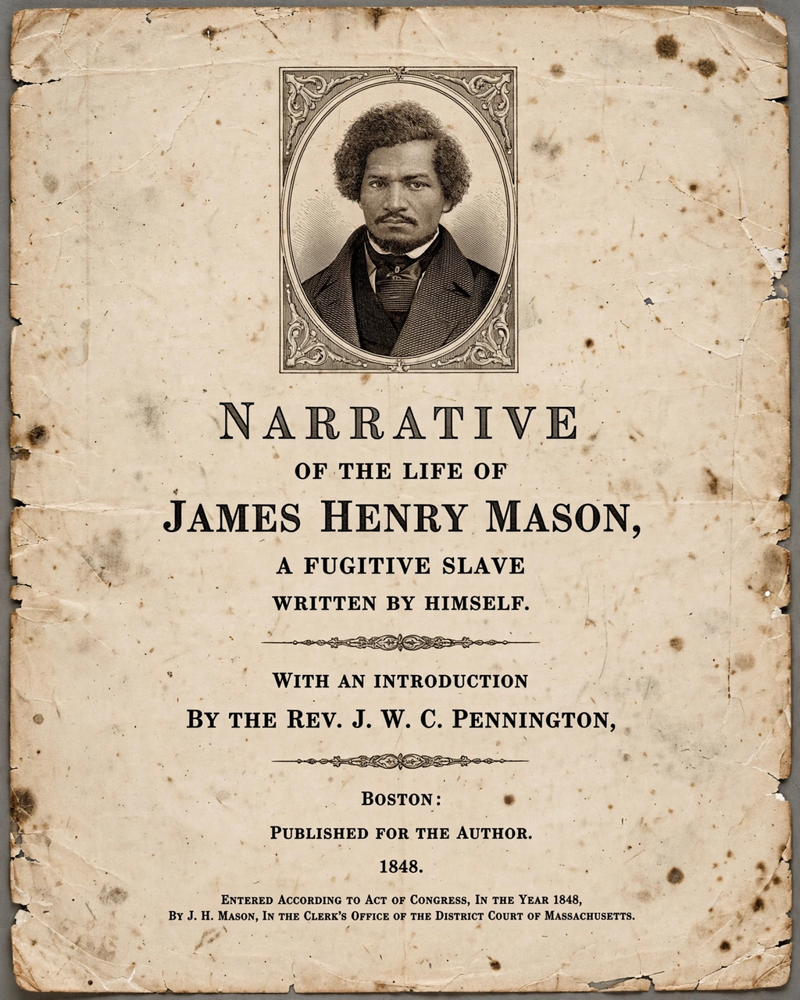

Slave narrative
 | |
| Form | Autobiography, memoir |
|---|---|
| Period | c. 1760s–1865 (antebellum narratives); later WPA narratives 1930s |
| Major figures | Olaudah Equiano, Frederick Douglass, Harriet Jacobs, Solomon Northup |
The slave narrative is a type of literary genre involving the autobiographical accounts of enslaved Africans in British America and the United States. Over 6,000 such narratives are known to have been published, and they form one of the foundational traditions of African-American literature.
History
Early examples include Ukawsaw Gronniosaw's narrative (1772) and The Interesting Narrative of the Life of Olaudah Equiano (1789), which became a bestseller and advanced the abolitionist cause in Britain. In the United States, the genre flourished from the 1830s to the end of the Civil War, as abolitionist societies published and promoted narratives as evidence of slavery's brutality.
The most famous antebellum narratives are Frederick Douglass's Narrative of the Life of Frederick Douglass, an American Slave (1845), Harriet Jacobs's Incidents in the Life of a Slave Girl (1861), which exposed the sexual exploitation of enslaved women, and Solomon Northup's Twelve Years a Slave (1853), adapted into an Academy Award-winning film in 2013.
Characteristics
Slave narratives typically open with the formula "I was born..." and follow a pattern: a childhood in slavery, the awakening to literacy as the path to freedom, scenes of violence and religious hypocrisy among slaveholders, an escape attempt, and arrival in the free North. Because white readers doubted Black authorship, narratives were often authenticated by white editors' prefaces and subtitles such as "Written by Himself."
Legacy
In the 1930s the Federal Writers' Project collected more than 2,300 interviews with formerly enslaved people. The tradition continues in the modern "neo-slave narrative," including Toni Morrison's Beloved (1987) and Colson Whitehead's The Underground Railroad (2016).